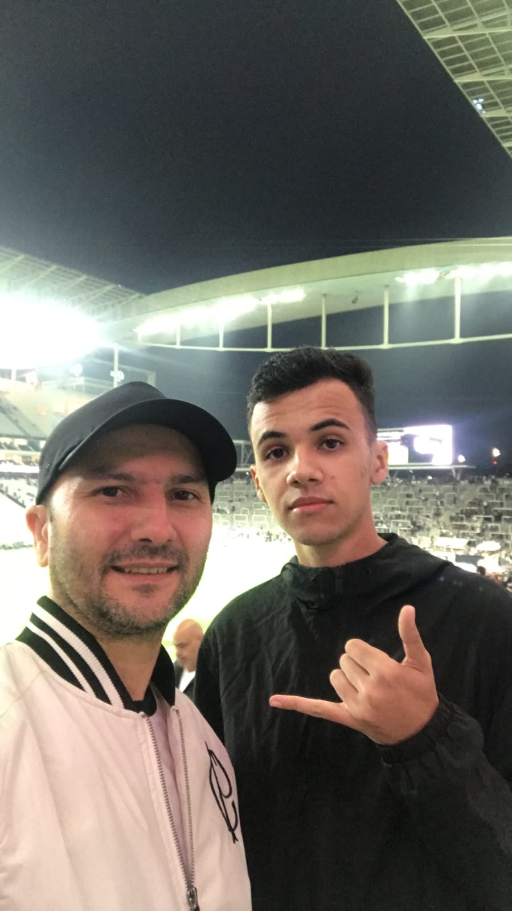

Meu nome é Guilherme Ornaghi, sou apaixonado pelo Corinthians desde criança e criei este site como
projeto da SPTech para mostrar minha ligação com o time. Aqui você encontra momentos marcantes, troféus e
curiosidades. tudo do jeito que eu vejo o Corinthians.
